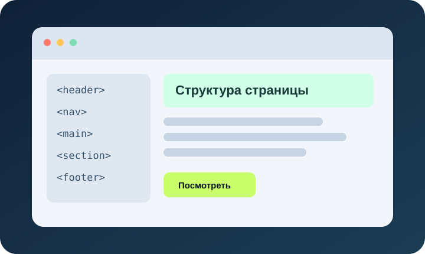

Учебный сайт
Здравствуйте! Меня зовут Курбанова Арина, я учусь в группе БЮРЦЮ252. На этом сайте собраны примеры HTML, CSS и JavaScript.
Разделы сайта

Для справки можно открыть учебные материалы MDN в новом окне.
Здравствуйте! Меня зовут Курбанова Арина, я учусь в группе БЮРЦЮ252. На этом сайте собраны примеры HTML, CSS и JavaScript.

Для справки можно открыть учебные материалы MDN в новом окне.